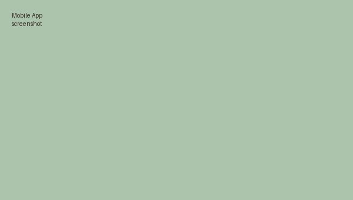
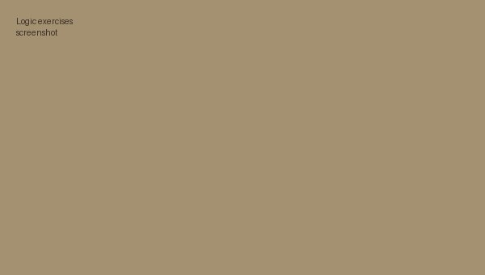

Basic Mobile App Prototype
A prototype Android app built during the Introduction to Mobile Application Development module, applying core mobile UI and logic concepts covered in the course.
A selection of the practical work from my studies so far.

A prototype Android app built during the Introduction to Mobile Application Development module, applying core mobile UI and logic concepts covered in the course.

A set of problem-solving exercises completed as part of Introduction to Programming Logic, focused on breaking problems into algorithms before writing any code.